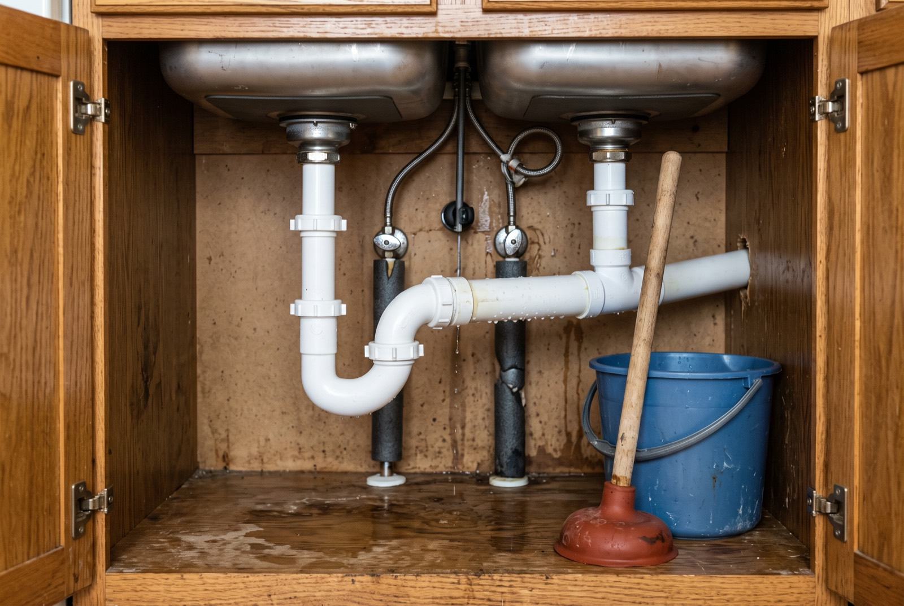

Kitchen sink choke: DIY fixes & when to call a plumber

Sink draining slowly, or not at all? A kitchen sink choke is one of the most common plumbing problems in Singapore homes, and most cases are grease and food solids hardening in the trap under the sink. The good news: a clogged kitchen sink fix is often a DIY job — hot water flush, plunger, clearing the bottle trap, then a hand auger, in that order. This guide walks you through each step, covers floor trap and toilet bowl chokes too, and tells you when a recurring choke means the blockage is deeper and it's time to call a plumber.
Why kitchen sinks choke so often in Singapore
Local cooking is hard on kitchen pipes. Wok frying, curries and soups send a steady stream of oil and grease down the drain — liquid when hot, but congealing into a waxy layer the moment it hits the cooler pipe under your sink. Then come the solids — rice, noodles, coffee grounds, vegetable trimmings — which stick to the grease instead of washing through. Rice is the worst offender: it swells and packs into a dense plug inside the trap.
The bottle trap (the U- or bottle-shaped fitting under the sink) holds a water seal that keeps sewer smells out of your kitchen — and its bends are the first place grease and solids settle, which is why most chokes start there. In older HDB flats, decades of build-up along the pipe run can narrow it so much that a small amount of debris tips it into a full choke.
The DIY ladder: four fixes in order
Work from the gentlest method up. Each step costs little and takes minutes; if one doesn't work, move to the next.
Step 1: Hot water flush
For a slow-draining sink (not a total blockage), squirt dish soap into the drain, then slowly pour a few litres of hot — not boiling — water down it. The soap and heat soften the grease enough for it to move on; boiling water can deform PVC pipes and rubber seals. Repeat two or three times. Works best on early-stage grease chokes.
Step 2: Plunger
Use a cup plunger (the simple dome type, not the flanged toilet type). Fill the sink with a few centimetres of water so the cup seals, block the overflow hole with a wet cloth, and plunge with short, sharp strokes for 20–30 seconds. The pressure wave often dislodges a trap-level plug — give it a few rounds before moving on.
Step 3: Open and clear the bottle trap
Put a pail under the trap, then unscrew it by hand (use a cloth for grip). Let the water drain, pull out the plug of grease and food solids, rinse the parts, and screw everything back — seating the washers properly so it doesn't drip and become a leak problem later. This clears the majority of kitchen sink chokes.
Step 4: Hand auger (drain snake)
If the trap is clean but the sink still won't drain, the choke is in the pipe beyond it. A small hand auger — a few metres of flexible cable with a corkscrew tip, cranked by hand — can reach it. Feed the cable in through the trap opening (with the trap removed) rather than down the sink strainer, rotate as you push, work it back and forth at resistance, then pull back slowly to bring the debris out.
What not to do
- Caustic drain chemicals on old pipes. Caustic soda-based cleaners generate heat and can soften aged PVC joints and eat at corroded metal pipework in older flats. Worse, if the choke doesn't clear, you're left with a sink of caustic water you can't safely plunge or open at the trap.
- The coat-hanger trick. A straightened wire hanger scratches the pipe and trap; the scratches become anchor points where grease catches faster, so the choke returns sooner — and a hanger can't turn corners like an auger.
- Forcing it with high pressure. Improvised water-pressure tricks can blow apart a hand-tightened trap joint and flood the cabinet.
- Ignoring a slow drain. A sink that gurgles or drains slowly is a choke in progress. Clearing it early is a five-minute job; a full blockage is not.
Floor trap and toilet bowl chokes
The same logic applies to the other two chokes Singapore households meet most.
Floor trap choke (HDB kitchens and bathrooms). The grated floor drain collects hair, soap sludge and grease from washing. Lift the grate, pull out the visible debris (gloves recommended), and flush with water. If water still pools or a bad smell persists, the blockage is deeper in the trap body and needs an auger. A dry or blocked floor trap also loses its water seal — the classic source of a sewer smell in the flat.
Toilet bowl choke. Usually too much paper, wet wipes ("flushable" ones included — don't flush them) or a dropped object. Use a flanged toilet plunger, which seals into the outlet, and plunge firmly; if that fails, a closet auger is the right tool. Never pour hot water into a toilet bowl — thermal shock can crack it. If the water level rises when other fixtures are used, stop: the blockage is beyond the bowl.
Recurring chokes: when it's the common stack
A choke that keeps coming back after clearing — or one that affects several fixtures at once (sink backs up when the washing machine drains, floor trap bubbles when the neighbour above runs water) — is usually not in your flat's pipework at all. In HDB blocks and condos, each unit's pipes feed into a shared vertical common stack, and years of accumulated grease from multiple households can choke it. No amount of plunging at your sink fixes a stack problem — and in HDB blocks it may fall under the town council's purview rather than yours, so check before paying for repairs to a shared pipe.
When to call a plumber
- You've run the full DIY ladder and the sink still won't drain.
- The choke returns within weeks of being cleared.
- Water backs up in more than one fixture, or foul water rises from the floor trap.
- There's an odour problem that clearing the visible trap doesn't fix.
- The trap or pipework is damaged, corroded or leaking once opened.
Note that in Singapore, plumbing work on water service and sanitary pipes is regulated — PUB requires a licensed plumber for works beyond simple maintenance. For anything involving the concealed pipework or the stack, use a professional rather than opening things up yourself.
What it costs to clear a choke in Singapore
Indicative 2026 ranges for common choke-clearing jobs. Actual pricing depends on access, severity and timing (night and weekend call-outs cost more) — always confirm a fixed quote before work starts.
| Job | Indicative price (SGD) | Notes |
|---|---|---|
| DIY tools (plunger, hand auger) | $10 – $40 | One-off purchase, reusable |
| Plumber: simple sink / floor trap choke | $60 – $150 | Cleared with auger or machine snake |
| Plumber: toilet bowl choke | $80 – $200 | Closet auger; removal of bowl costs more |
| Recurring / common stack blockage | Quote on site | Needs inspection first; may involve town council |
Prevention: habits that keep the pipe clear
- Never pour oil or grease down the sink. Wipe oily pans with kitchen paper first, and collect used cooking oil in a container for the bin.
- Use a sink strainer and empty it into the rubbish, not down the drain. Rice and noodle scraps belong in the bin.
- Flush with hot soapy water weekly to keep grease from building a base layer.
- Keep floor traps wetted and clean — pour some water in weekly to maintain the smell seal, and clear the grate of hair and debris.
- Only flush the three Ps in the toilet — no wipes, cotton, floss or sanitary products.
Getting it done by RK E&C
RK E&C is a Singapore-registered renovation and handyman company (UEN 202442767D) that clears sink, floor trap and toilet chokes in HDB flats and condos island-wide — as a standalone job or alongside tap repairs, fixture fixing and other handyman work. Many choke visits also pick up related jobs like a water heater replacement or a dripping mixer while we're on-site. Browse the rest of our guides for more practical home-repair walkthroughs.
Send a short video of the choked drain and your postal code and we'll quote you — usually the same day.
Frequently asked questions
How do I clear a kitchen sink choke myself?
Work up the ladder: hot (not boiling) soapy water, then a cup plunger with the overflow blocked, then clean the bottle trap, then a hand auger. If all four fail, the blockage is beyond DIY reach.
Why does my kitchen sink keep choking?
Grease solidifies in the trap and pipe walls, and rice, noodles and scraps stick to it. If it chokes again within weeks of clearing, the build-up is deeper in the pipe run or common stack and needs professional clearing.
Can I pour drain-cleaning chemicals down my sink?
Risky on older pipes — caustic cleaners generate heat that can damage aged PVC joints and corroded metal, and an uncleared choke leaves caustic water you can't safely plunge or open at the trap. Mechanical methods are safer and work better on grease.
How much does it cost to clear a sink or toilet choke in Singapore?
Indicatively, S$60–S$150 for a simple sink or floor trap choke and S$80–S$200 for a toilet bowl choke. Recurring or stack blockages need an on-site inspection and quote. Confirm a fixed price before work begins.
What is a floor trap choke and why does my bathroom smell?
The floor trap is the grated floor drain; its water seal blocks sewer smells. When hair, sludge and grease clog it, water pools and the seal can be lost, letting odours in. Clearing the grate fixes most cases; deep ones need an auger.
When should I call a plumber instead of DIY-ing a choke?
When the DIY ladder fails, more than one fixture backs up, the choke keeps returning, or foul water rises from the floor trap — all signs of a deeper blockage. For work beyond surface-level clearing, use a PUB-licensed plumber.
Sink still not draining?
Send us a short video of the drain and your postal code. Fixed-price quote before we start, island-wide.
Prices are indicative of the Singapore market in 2026 and not a quotation. Confirm a fixed price with your provider before work begins.